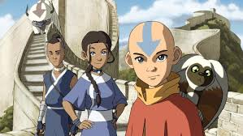
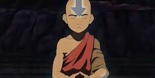

 La serie se desarrolla en un mundo ficticio donde coexisten cuatro grandes naciones; Las Tribus Agua, El Reino Tierra, La Nación del Fuego y Los Nómades Aire. En cada nación existen personas capaces de dominar su elemento de origen, a estos se les llama «maestros», cabe mencionar que la mayor parte de la población está constituida por personas normales, que no pueden dominar ningún elemento, esta regla se cumple con todas las naciones excepto por los nómadas del aire, ya que todos sus habitantes son maestros. Ciertos elementos de la naturaleza le proporcionan más poder a los maestros, como por ejemplo la luna llena, la cual le proporciona más poder a los maestro agua, o el sol a los maestros fuego. Existe también el cometa de Sozin (que pasa cada cien años cerca de la tierra) el cual le brinda gran poder a los maestros fuego, este cometa es usado por la nación del fuego para iniciar la guerra de la cual trata la serie. En cada generación nace un Avatar, esta es la única persona capaz de dominar los cuatro elementos y es el encargado de mantener el equilibrio entre las cuatro naciones así como de servir de puente entre el mundo de los mortales y el mundo de los espíritus, por lo que se podría decir que es quien preserva la paz en todo el mundo.
 Una serie de trilogías de novelas gráficas publicadas por Dark Horse Comics sirve de continuación oficial y directa de Avatar: la leyenda de Aang, que continúa las aventuras de Aang y sus amigos después de los eventos ocurridos en el último episodio de la serie animada. Concretamente, las historias de estas trilogías se enfocan en los acontecimientos que sucedieron después de la caída del Señor del Fuego Ozai derrotado por el Avatar Aang, cuyo resultado significó el fin de la guerra de los cien años y Zuko se convirtió en el nuevo Señor del Fuego. La continuación se inicia con Aang y el Señor del Fuego Zuko trabajando en colaboración con el rey Tierra Kuei para eliminar las colonias de la Nación del Fuego de las costas del Reino Tierra en el denominado movimiento de restauración de la armonía. Preocupado de que algún día se convierta como su padre, Zuko obliga a Aang a hacerle una promesa poco después del final de la guerra y asumiera el trono. Tiempo después, Zuko intenta ir en contra de los deseos de Aang y Kuei permitiendo que una colonia de la Nación del Fuego bien integrada permanezca y, ante su negativa de devolver el territorio al Reino Tierra, la promesa hecha por Aang se pone a prueba en su intento de mantener el equilibrio entre las cuatro naciones.